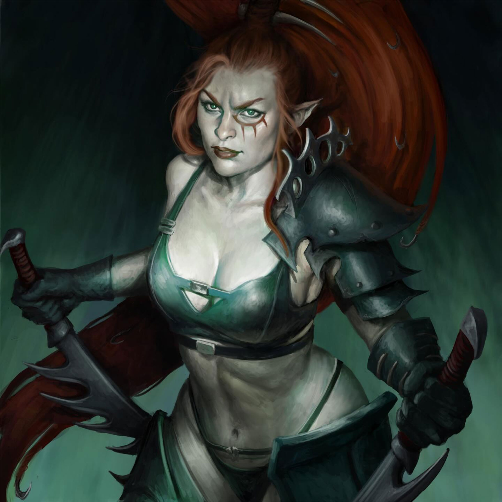
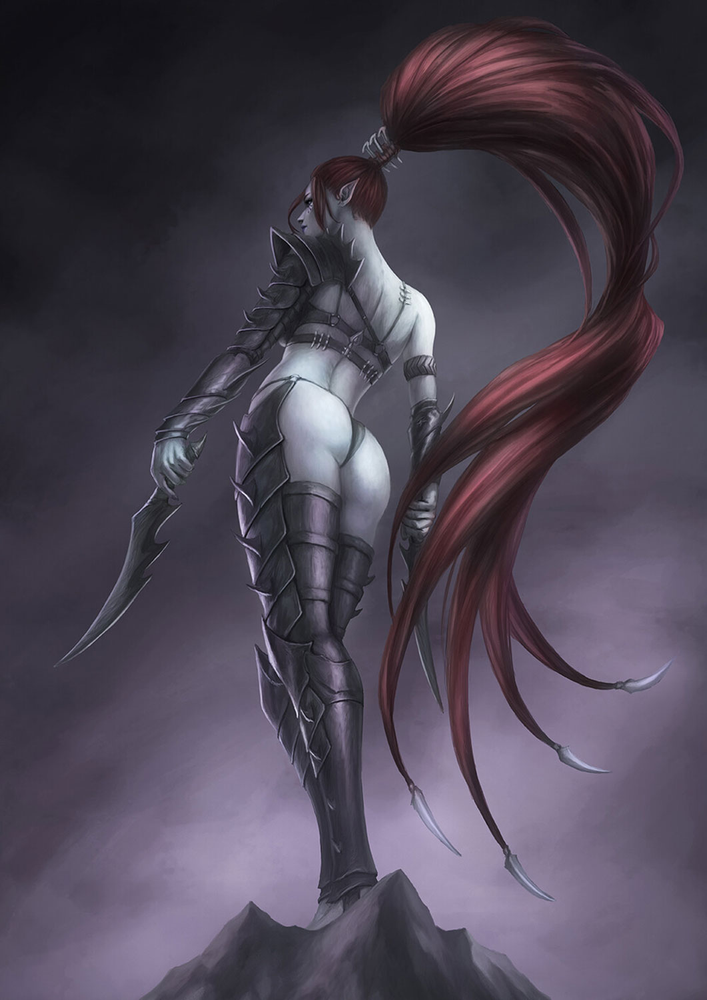

LELITH HESPERAX
Succubus Suprema • A Rainha das Wyches • Culto da Morte e Conflito

Origem
Na sociedade cruel e sangrenta de Commorragh, o entretenimento é a dor, e as arenas das Wyches são os palcos onde os combatentes mais letais do universo se enfrentam até a morte para saciar a fome de almas dos espectadores. Acima de todos esses gladiadores ergue-se Lelith Hesperax, a campeã incontestável e Succubus Suprema do Culto da Morte e Conflito (Cult of Strife).
Lelith é uma lenda viva em Commorragh. Diferente de outras Wyches que dependem de poções de combate ou mutações genéticas complexas para se aprimorarem, ela luta em sua forma puramente natural, rejeitando armaduras e aprimoramentos. Ela considera a adição de química ao seu corpo um insulto à sua habilidade inata.
O culto de Lelith é tão poderoso e prestigiado que o próprio Asdrubael Vect a contratou como sua principal proteção. Suas performances sangrentas e graciosas não são apenas batalhas; são obras-primas da anatomia destruída, exibidas com tanto charme letal que o público muitas vezes fica atordoado demais até mesmo para aplaudir.

Credo de Guerra
"Eles chamam de combate; eu chamo de performance. Minhas lâminas não cortam simplesmente carne, elas escrevem tragédias no palco de um campo de batalha moribundo."
Para Lelith, cada combate é um show que deve ser exibido com perfeição estética e brutalidade arrepiante. O medo e a esperança fugaz do inimigo são o verdadeiro combustível de suas lâminas. Ela nunca mata seus alvos instantaneamente se puder transformar a sua morte em uma performance dolorosa de várias horas.
Quando atua fora das arenas e marcha em invasões na galáxia no "Espaço Real", Lelith muitas vezes age sozinha, mergulhando no coração do fogo inimigo. Onde outros procurariam cobertura tática, ela flui através de saraivadas de bolter em uma dança letal sem sequer ser arranhada.
Recentemente, por ordem da misteriosa deusa da morte Ynnead, Lelith mudou suas lealdades e tornou-se parte ativa da força dos Ynnari, aliando-se surpreendentemente com seus distantes primos Asuryani para derramar o sangue das forças do Caos nas arenas estelares da vida real.
Capacidade Bélica
- Lâminas Assassinas: Ela brande facas de duplo fio banhadas em venenos excruciantes. Em suas mãos, essas lâminas curtas defletem tiros em pleno ar e fatiam blindagens cerimoniais com facilidade.
- Dançarina da Morte: A capacidade evasiva de Lelith desafia a física. Ela desliza pelos ataques físicos e tiros, utilizando apenas a velocidade pura para desviar de tudo, rejeitando vestir qualquer tipo de armadura de proteção pesada.
- Cabelos Armados: Até o cabelo de Lelith é letal. Amarrados com ganchos e espinhos de barbear minúsculos, ela usa as tranças como chicotes cortantes durante acrobacias insanas.
- Carisma Terrível: Seu status de realeza das Wyches garante que quando ela caminha para o campo de batalha, todo o exército de Commorragh (ou os guerreiros Ynnari) luta com renovada sede de sangue.
Localização Atual: Combatendo ao lado de Yvraine e dos Ynnari em campanhas ativas para deter Slaanesh e as forças da Cicatrix Maledictum.
Status: Ativa - Buscando a próxima grande exibição de carnificina e lutando para unir a raça Aeldari na sombra da morte.
